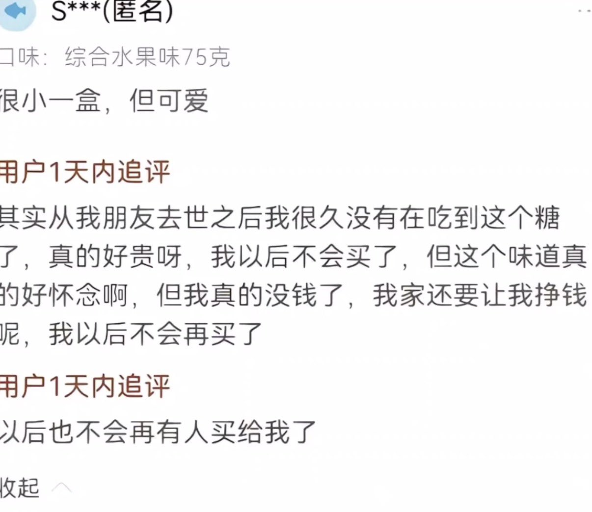

海月水母x17🍥
@Aureliax17QwQ
我的第一套女装，是水水给我买的，给我穿上的。
我很喜欢小裙子的颜色。
我还记得我们一起泡在浴缸的水温，我还记得贴在他身上的体温，我记得他肌肤的味道。
我还依稀感觉的到他头发的手感，他的眼睛，他的声音。他在叫我，17。
我还记得我给他买他感兴趣的的海肠捞饭。他喜欢吃德克士的手枪腿，真的很大。
他喜欢汉堡王，薯条➕双层肉饼大皇堡和可乐的套餐。
我们最喜欢的饮料是无糖芬达，我们真的都很喜欢喝。
还记得他的嘴唇亲起来的感觉，还记得在他身上吸的草莓印。
以后也不会再有人买给我了。
水水，幸好人是肉做的，要是钢铁，早断了呢。
